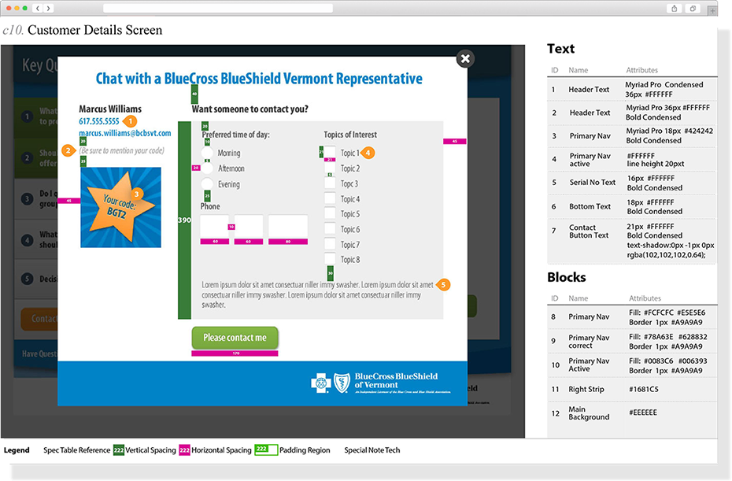
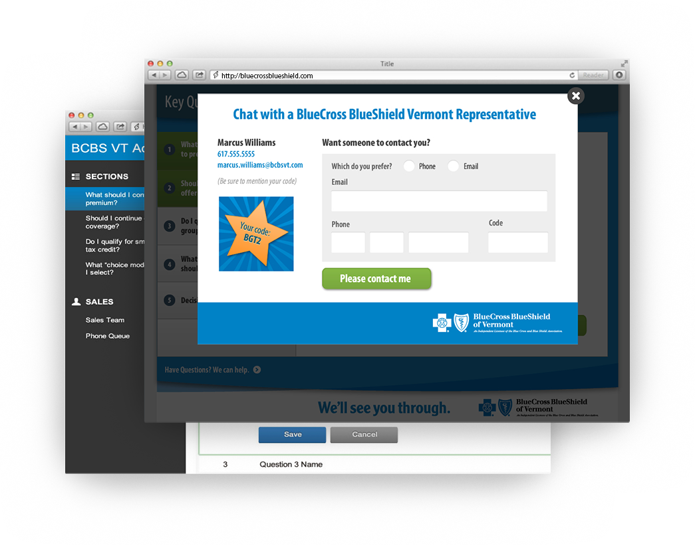

The goal of the BlueCross BlueShield (BCBS) gamification campaign was to focus on the key questions employees and customers alike have in the health insurance “exchange retail marketplace“. They wanted to Gamify their desktop and mobile apps and include an Admin section to help educate sales people on offerings, as well as to train employees on leadership topics.
As the UI Designer for this Gamification practice, I was part of an ambitious project and collaborated with various stakeholders and teams from US-based Architects to nationally placed Project Managers. I was a major part of the designing team and helped produce some of the deliverables, create specifications and set the Style Guide.

The purpose of this Style Guide document was to give the reader, a better understanding of the design process and procedure to conform to. This document can also be used by the other designers and developers as a "template" in order to continue with the coding.
The best way to attract more users was to improve functionality and usability and include a mobile-responsive design. Thus, we created a microsite that helped this goal by integrating the exchange retail market’s key questions for visitors to continually amplify the campaign's awareness.
This means easy navigation that would reduce the number of clicks to key sections of the site and a unique design that is focused on the hospital’s branding and organizational goals. We also found that featuring online services like educating employees on leadership topics through gamification and integrated exchange retail market key questions for visitors to continually amplify the campaign’s awareness helped a lot as well. The mobile-responsive design that works across all devices and browsers, with a reduced page depth for critical functionalities and an overall optimized user experience was the optimal solution worked towards.
A mobile-friendly site that wowed the client and pushed boundaries visually and helped to generate awareness to the visitors and educate sales people. The portion of sessions on mobile devices rose from 38% in the year leading up to the redesign to 45% in the year immediately after the redesign and continues to grow yearly. The sales people education services and employee’s leadership section were great because it let their employees and visitors find information and communicate with them throughout this campaign.